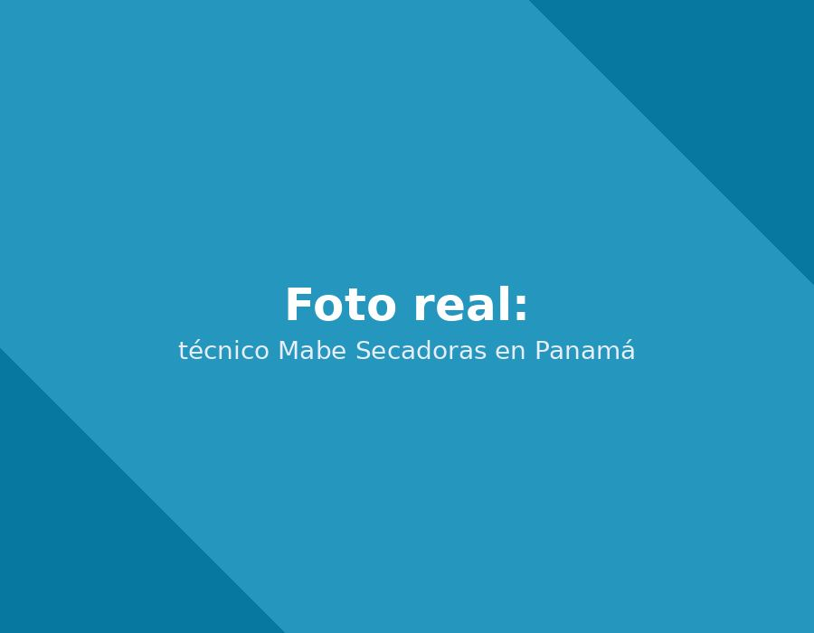

Nuestro servicio técnico Mabe en Panamá instala su secadoras con conexiones seguras, nivelación correcta y prueba de funcionamiento completa.

Instalamos la conexión de gas con prueba de fugas, o la conexión eléctrica según el modelo.
Un ducto correctamente instalado es clave para la eficiencia y seguridad del equipo.
Evita vibraciones excesivas y ruido durante el ciclo de secado.
Una instalación correcta es clave para el buen funcionamiento de su secadoras Mabe. Nuestro proceso incluye nivelación, conexiones seguras y prueba de funcionamiento completa antes de entregar el equipo.
La instalación de su secadoras Mabe toma normalmente entre 1 y 2 horas, según si requiere conexión nueva de agua o drenaje. Llegamos con las herramientas y accesorios necesarios para dejar el equipo funcionando el mismo día.
Cuéntanos el modelo de su equipo. Te confirmamos por WhatsApp en minutos.
☏ Escríbenos por WhatsApp